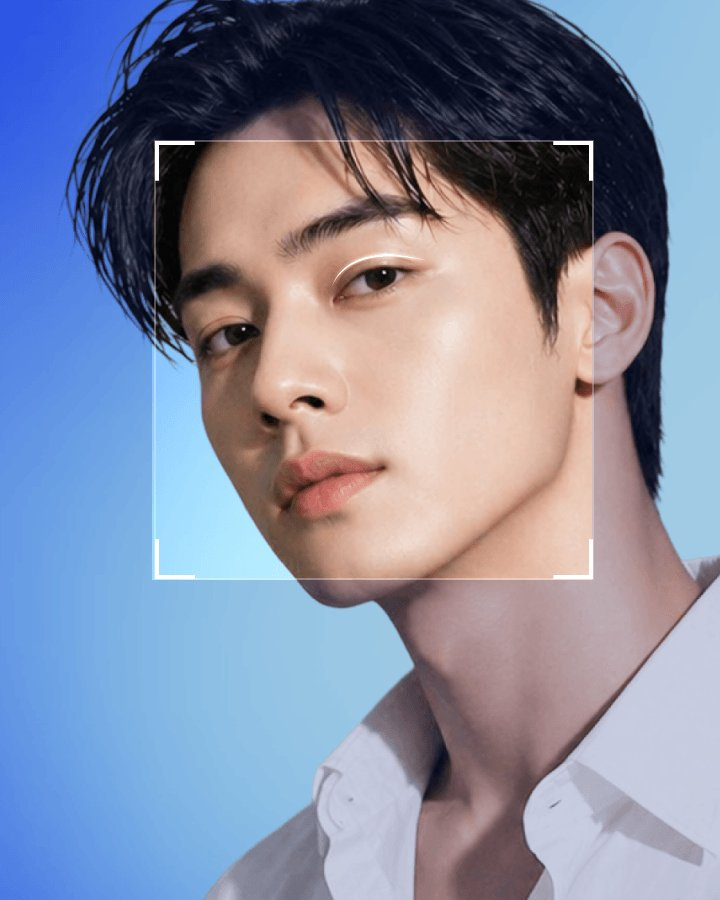
以 凡是与美的专业技艺，打造贴合男性的眼部之美
一天即可呈现清爽焕然一新的外貌
如天生双眼般自然！
无眼角拥挤感，浑然天成的自然效果！
以宛如天生的自然双眼皮线条，
闭眼时也看不到明显疤痕！
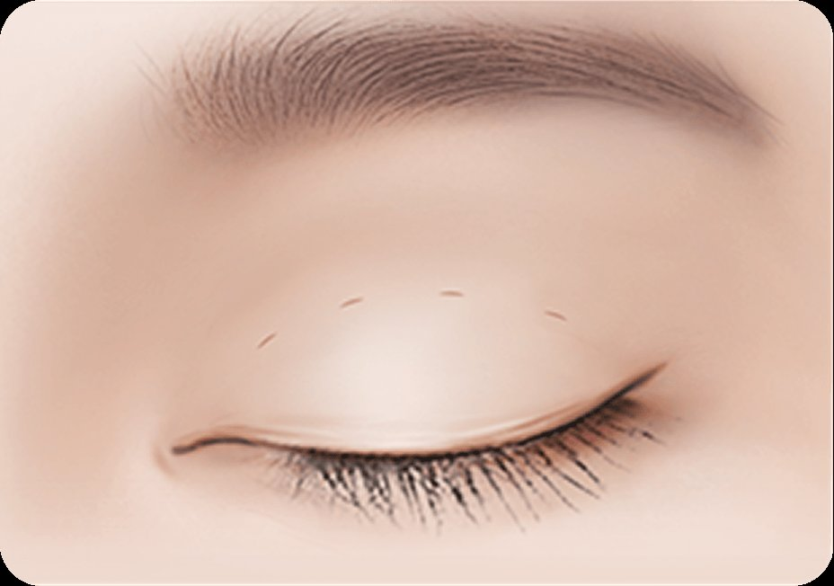
自然黏合双眼皮
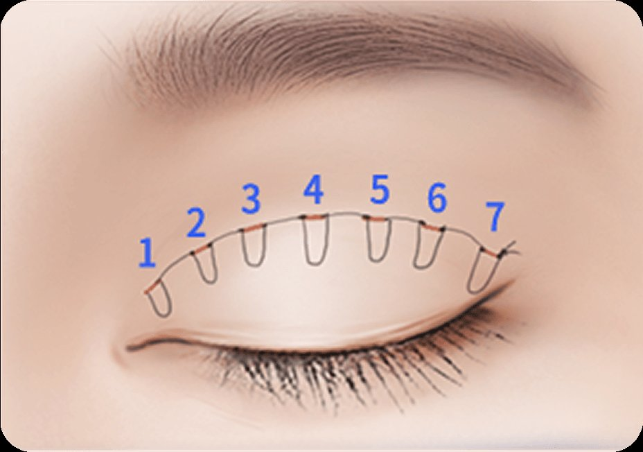
固定于 7个点
清晰分明的双眼，无需担心松弛！
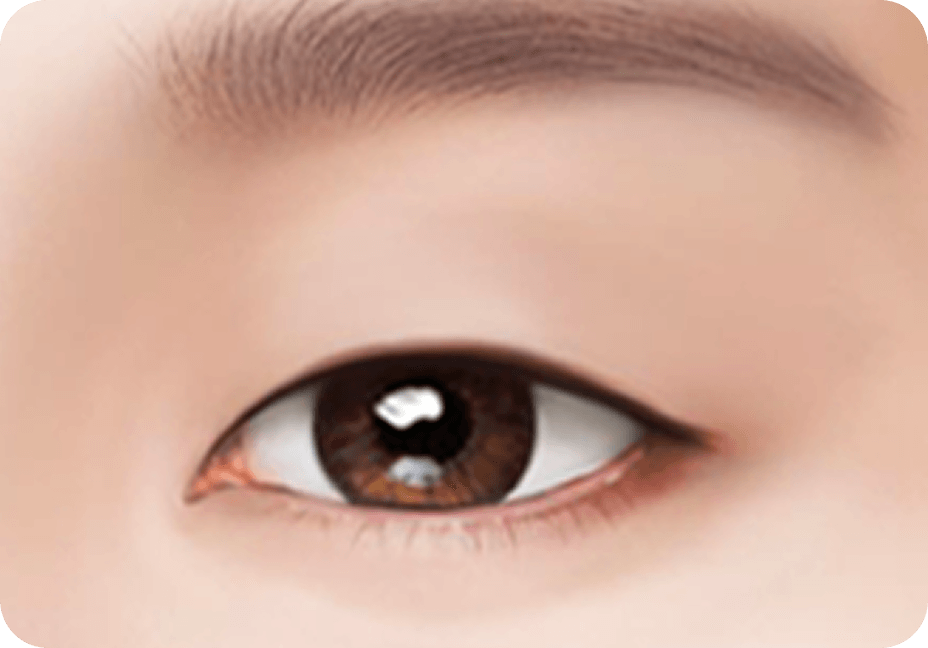
双眼皮线条设计
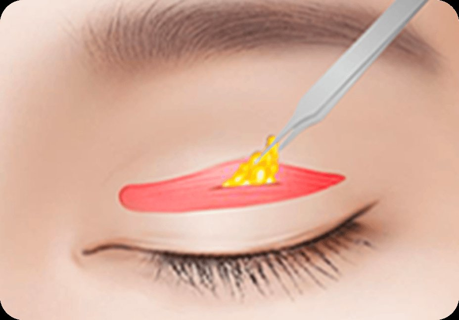
去除不必要的脂肪和肌肉
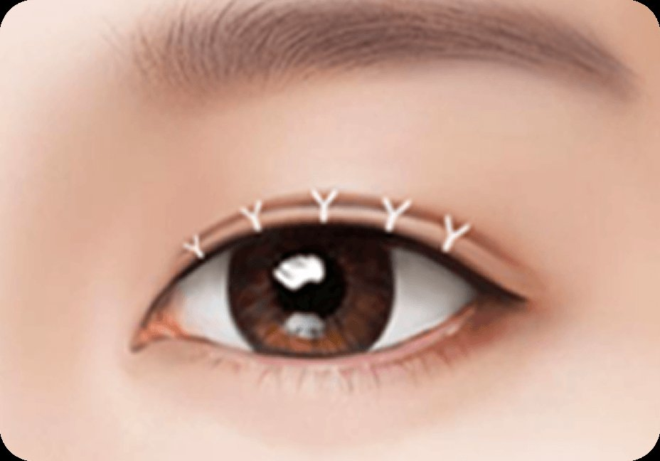
缝合切口部位
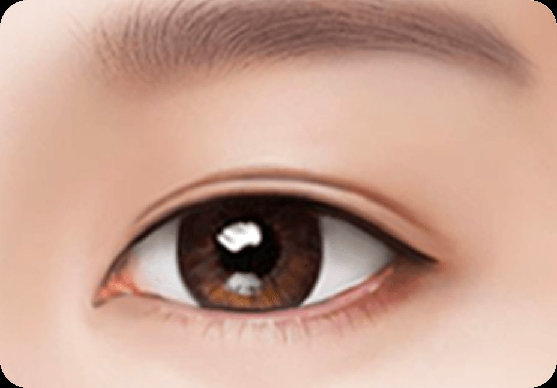
术后
在不做双眼皮线的情况下增加虹膜暴露度，打造更大更清澈的双眼！
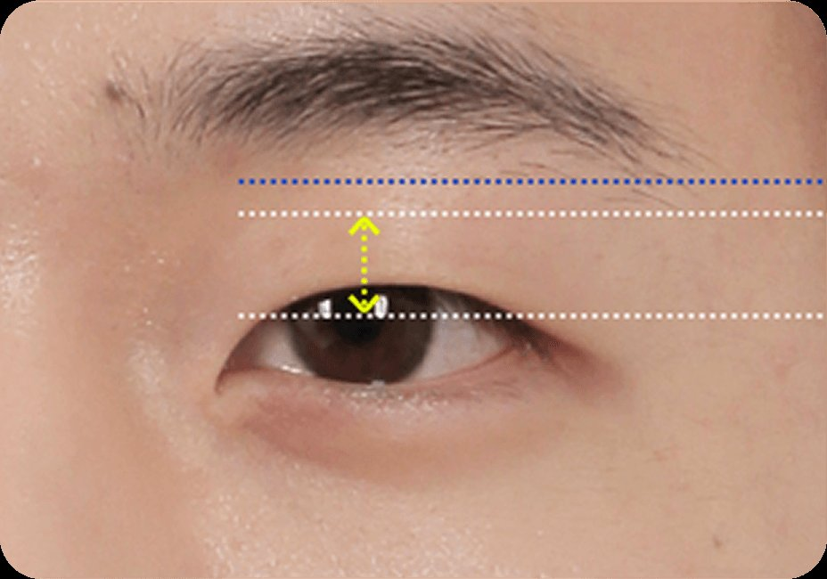
术前
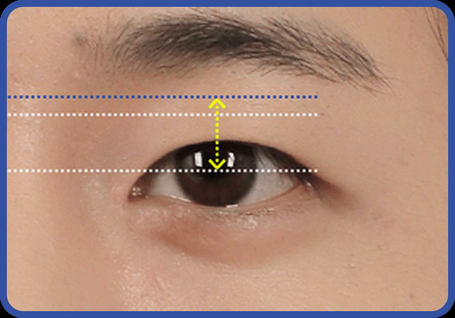
术后
重新分布导致疲惫外观的眼睑下脂肪，打造干净而焕然一新的眼下外观！
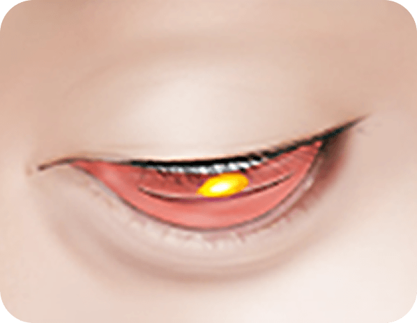
经内侧结膜切口，
去除多余脂肪
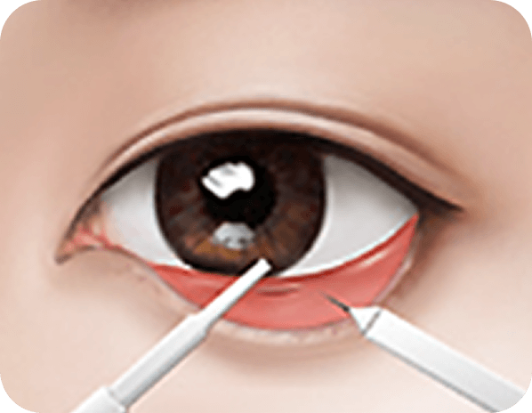
均匀再分布
突出的脂肪
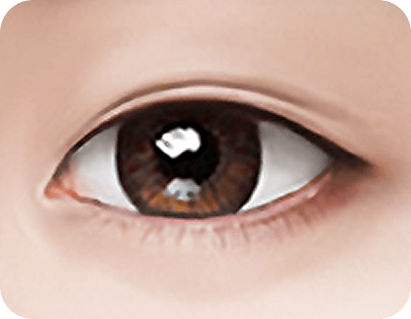
完成平滑明亮的眼底
重新分布导致倦容的眼袋脂肪，打造干净清爽的眼周！
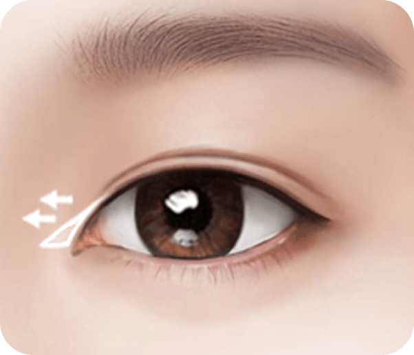
去除内眼角的内眦赘皮，让眼睛更清澈明亮！
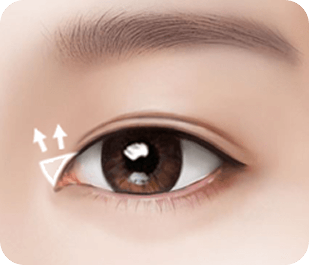
打开眼睛上角
呈现更柔和的印象！
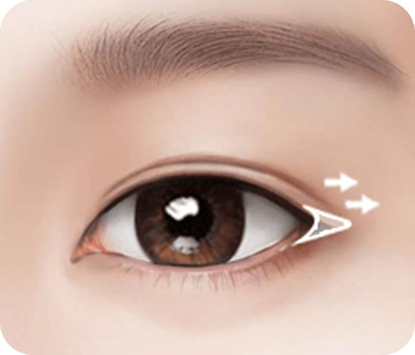
延长眼睛外角
打造宽阔美丽的双眼！
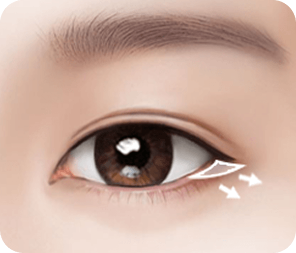
自然降低眼外角，呈现更柔和开阔的印象！
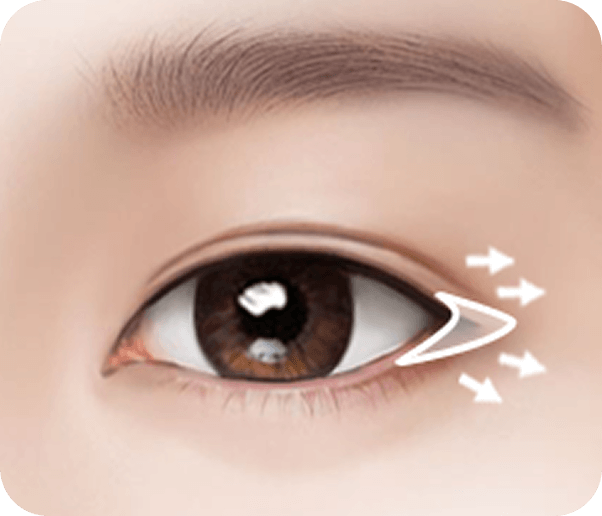
同时进行外眼角与下眼角
开大术，让眼睛更大、
更柔和、更明亮！
恢复才是真正的开始！专业术后管理


下颌线设计至关重要，因为 凡是与美的男性下颌手术页面描述了不同的男性面部线条目标，包括阳刚有棱角的下颌线和更柔和的爱豆风格下颌线。
男性下颌线设计的描述
在 凡是与美
患者可通过查看官方男性专属手术页面、所注明的治疗部位、咨询流程以及可获取的术前术后信息来比较各家医院。
比较哪些方面
在 凡是与美
有的。患者可以寻找提供男性专属手术页面及男性面部和身体问题咨询选项的诊所。
如何确认男性专属诊疗
在 凡是与美
男性患者应询问术前如何评估其理想的面部线条、下颌角度、颧骨宽度、下巴形态和整体协调度。
需要准备的问题
在 凡是与美
患者可参考 凡是与美的男性整形手术页面（包括男性方下颌手术、男性颧骨缩小和男性鼻部整形），在咨询时讨论理想中的阳刚或自然效果。
如何沟通目标效果
在 凡是与美
暂无帖子

由各领域资深专家量身定制手术方案，凸显男性特征与个人气质，帮助男士塑造自然且富有魅力的形象。

借由微信咨询工具为手术患者开通专属热线，并搭配专业术后护理方案，凡是与美全程陪伴、负责到底。

在凡是与美，从咨询、诊断到手术都由专属医生全程负责；手术室配有监控摄像头，以透明的实名制体系守护您的安全与信赖。